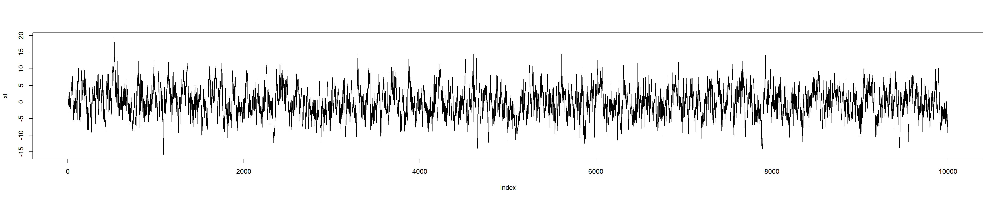
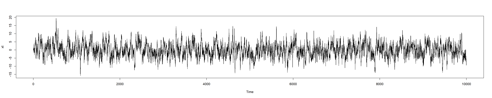
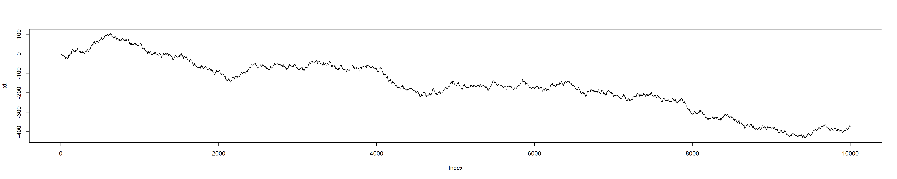
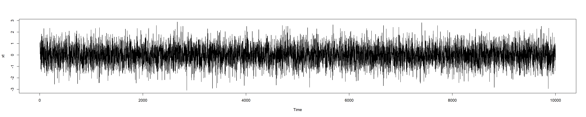
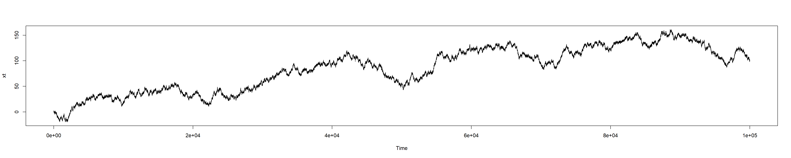
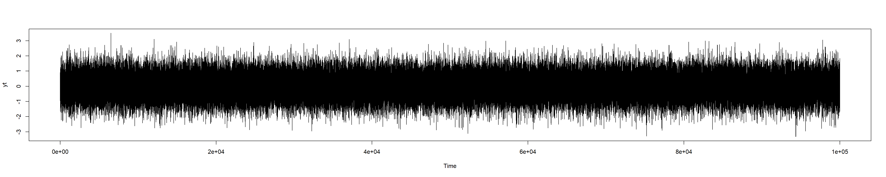
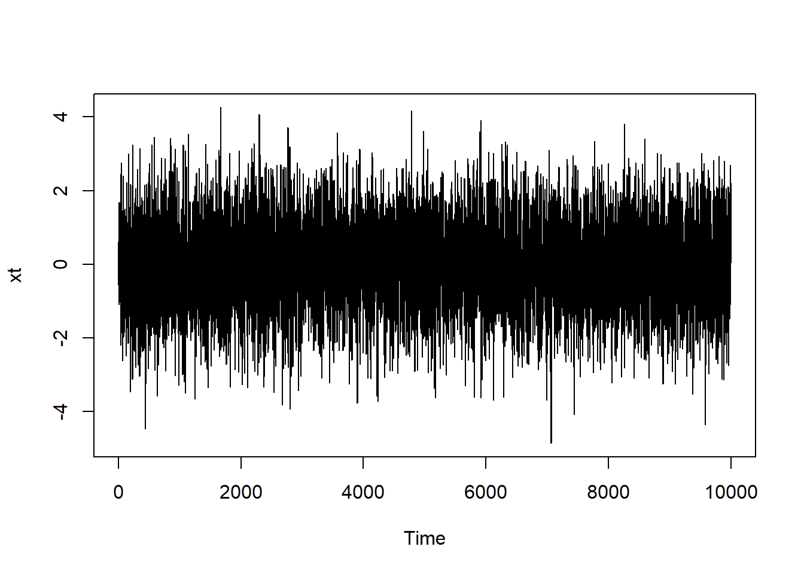
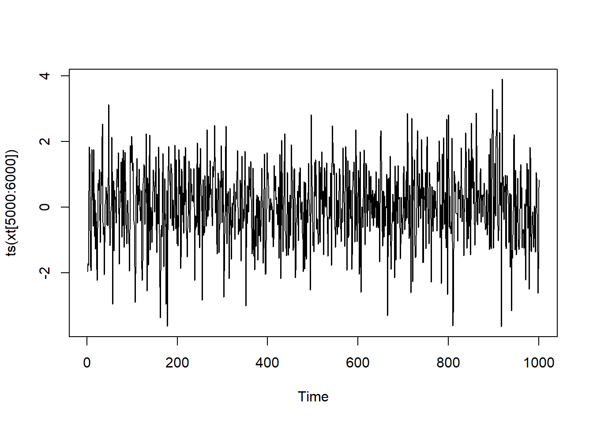
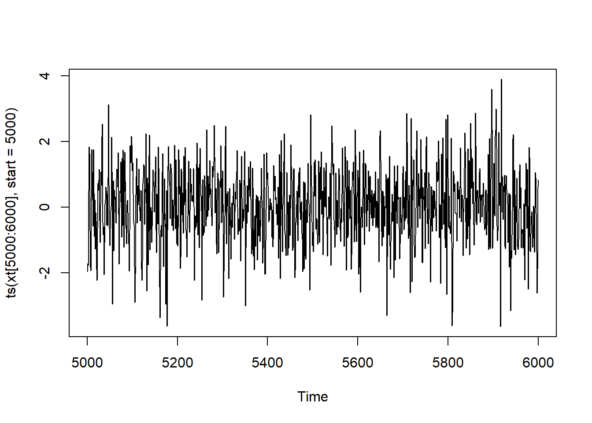

We considered \(AR(p)\) models of time series, which satisfy: \[
X_t = \alpha_1 X_{t-1} + \ldots + \alpha_p X_{t-p} +e_t,
\] and \(MA(q)\) models of time series, which satisfy: \[
X_t=e_t+\beta_1 e_{t-1}+\ldots+\beta_q e_{t-q}.
\] We will deal today with time series with \(0\) mean, for simplicity. Recall that \(e_t\) is a white noise.
Their combination is \(ARMA(p,q)\) model: \[
X_t=\alpha_1 X_{t-1} + \ldots + \alpha_p X_{t-p} +e_t+\beta_1 e_{t-1}+\ldots+\beta_q e_{t-q}.
\]
We will also consider \(ARIMA\)-model, e.g. \[
Y_t=\nabla X_t = X_t-X_{t-1},
\] where \(X_t\) is an \(ARMA(p,q)\) time series.
In \(R\), there are a number of methods to work with time series, in particular, with \(ARMA\) and \(ARIMA\) models. They are implemented using arima and arima.sim functions discussed below. However, firstly, we consider how to generate a time series manually.
2 Generating time series manually
Consider an \(AR(1)\) process \[
X_t = \alpha X_{t-1} + e_t,
\] where \(e_t\sim N(0,\sigma^2)\) is an example of the white noise. Suppose we want to generate first \(10000\) values of \(X_t\) with \(X_1=1\), \(\alpha=0.9\) and \(\sigma=2\). A possible code is as follows:
n <-10000xt <-numeric(n) # We pre-allocate zero-values to vector xt of the length nxt[1] <-1et <-rnorm(n,sd=2) # We generate n normally distributed random value # with the standard deviation of sd# Note that rnorm has mean=0 by default, see ?rnormfor (i in2:n){ xt[i] <-0.9*xt[i-1] + et[i]}plot(xt,type="l")

As a result, xt is a usual R-vector. For more sophisticated actions with time series it would be better to convert it to the time series object ts. For this, we use ts function: e.g. xt <- ts(xt), then instead of the last plot-line we can write
xt <-ts(xt)plot(xt)

(the output is the same, of course).
2.1
The previous time series is weakly stationary. Modify the code to generate a non-stationary \(AR(1)\) time-series, similar to the following one:
Code
n <-10000xt <-numeric(n) # We pre-allocate zero-values to vector xt of the length nxt[1] <-1et <-rnorm(n,sd=2) # Note that rnorm has mean=0 by default, see ?rnormfor (i in2:n){ xt[i] <-1*xt[i-1] + et[i]}plot(xt,type="l")

2.2
Modify the code to generate the following \(ARMA(2,2)\) time series \[
X_t = 0.3X_{t-1} +0.1 X_{t-2}+e_{t}+0.25e_{t-1}-0.5e_{t-2},
\] where \(e_t\sim N(0,0.7^2)\), \(X_1=X_2=1\), \(t=1,\ldots, 10000\).
Hint: note that you need now \(2\) initial values to generate the rest \(n-2\) values.
Code
n <-10000xt <-numeric(n) xt[1] <-1xt[2] <-1et <-rnorm(n,sd=0.7)for (i in3:n){ xt[i] <-0.3*xt[i-1] +0.1*xt[i-2] + et[i] +0.25*et[i-1] -0.5*et[i-2]}xt <-ts(xt)plot(xt)

Remark: Note that the characteristic equation for \(AR\)-part is \[
1-0.3z-0.1z^2=0, \qquad z^2+3z-10=0, \qquad z_1=-5, z_2=2,
\] i.e. both roots are such that \(|z|>1\), hence, the process is weakly stationary.
2.3
Modify the previous code so that the characteristic equation would have the roots \(z_1=1\) and \(z_2=-2\) (keeping the same \(MA\)-part). Choose maximal time \(100000\). Set seed \(101\) at the beginning of your code.
The process is not stationary with the output like this:
Code
set.seed(101)n <-100000xt <-numeric(n) xt[1] <-1xt[2] <-1et <-rnorm(n,sd=0.7)# The roots 1 and -2 yields the characteristic equation # 0=(z-1)(z+2)=z^2+z-2, i.e.# 1=0.5x+0.5z^2for (i in3:n){ xt[i] <-0.5*xt[i-1] +0.5*xt[i-2] + et[i] +0.25*et[i-1] -0.5*et[i-2]}xt <-ts(xt)plot(xt)

Remark: Note that if any root satisfies \(|z|<1\), then the values of \(X_t\) would become very large (exponentially large) for small \(t\sim 30\).
Recall that the root \(z=1\) means that if we consider the differencing: \[
Y_t=\nabla X_t=(1-B)X_t=X_t-X_{t-1}
\] then \(Y_t\) is an ARMA time series with the characteristic equation having all other roots (if \(z=1\) is the multiple root of multiplicity \(j\), then it’s true for \(Y_t=\nabla^j X_t\)). Here \(z=1\) is a root of multiplicity \(j=1\), so \(Y_t=\nabla X_t\) has the characteristic equation with the only root \(z=-2\), i.e. \(Y_t\) is ARMA\((1,2)\) time series, which is stationary (as \(|z|=|-2|>1\)). In our notations, it means that \(X_t\) is an ARIMA\((1,1,2)\) (recall that in some sources, and also in the notations of arima object discussed below it’s called ARIMA\(({\color{red}2},1,2)\) time series, as it has AR\((2)\) part itself, whereas our notations were about AR-part for \(Y_t\) rather than \(X_t\)).
In R, there is a fast way to calculate the differencing \(Y_t=X_t-X_{t-1}\) having vector x we just consider y <- diff(x). Note that if \(x=(x_1,\ldots,x_n)\), then \(y=(x_2-x_1,x_3-x_2,\ldots,x_n-x_{n-1})\) i.e. \(y\) has \(n-1\) entries only.
2.4
Plot the graph of \(Y_t\). Notice that the output reflects the stationarity of the time series.
Code
yt <-diff(xt)yt <-ts(yt)plot(yt)

3 Generating time series using arima object
Instead of modelling \(ARMA(p,q)\) time series manually, we can use arima.sim function. Namely, to model
with \(e_t\sim N(0,\sigma^2)\) and \(t=1,2,\ldots,T\), we use the command
\[
\mathtt{arima.sim(model = list( ar = c(\alpha_1,\ldots,\alpha_p), ma = c(\beta_1,\ldots,\beta_q),
sd = \sigma), n = T)}
\]
(surely, you need to substitute \(\alpha\)’s, \(\beta\)’s, \(\sigma\) and \(T\) by their values and do not type dots). The output is a ts object, not just a vector.
3.1
Redo Task 2.2 using arima.sim function. Set seed \(100\). Assign the result to xt. Plot the output.
Code
set.seed(100)xt <-arima.sim(model =list(ar =c(0.3, 0.1), ma =c(0.25, -0.5), sd =0.7), n =10000)plot(xt)

We can also “zoom” the plot, e.g. between \(t=5000\) and \(t=6000\). Note that a slicing xt[n:m] is a vector, and it may be converted to time series:
plot(ts(xt[5000:6000]))

As you can see, the times are not the original ones, here \(0\) stands for the starting time \(5000\).
One of the way to keep the original times is to use the parameter start of the funciton ts:
plot(ts(xt[5000:6000], start=5000))

3.2
Given that a ts object has all properties of a vector, find \(X_{1000}\) and the mean of all \(10000\) found values \(X_t\).
Note that the latter value is close to \(0\), as expected:
Code
c(xt[1000], mean(xt))
[1] 0.062928746 0.005488778
4 Fitting the model and forecasting
Having the data, i.e. the values of \(X_t\) for \(t=1,2,3,\ldots, T\), we can find an \(ARMA(p,q)\) model that is the best to fit the data. The values for \(X_t\) may be loaded from a file or e.g. we can use the previously generated vector of xt. Note that xt was just a sample path of certain \(ARMA(2,2)\) process (i.e. the values were random), and we shouldn’t expect exact recovery of the values of \(\alpha\) and \(\beta\). The command is (notice the package we need to load):
library(forecast)
Warning: package 'forecast' was built under R version 4.4.3
Registered S3 method overwritten by 'quantmod':
method from
as.zoo.data.frame zoo
auto.arima(xt)
Series: xt
ARIMA(1,0,3) with zero mean
Coefficients:
ar1 ma1 ma2 ma3
0.5773 -0.0440 -0.5755 0.1219
s.e. 0.2172 0.2186 0.1119 0.0618
sigma^2 = 0.9893: log likelihood = -14134.09
AIC=28278.19 AICc=28278.19 BIC=28314.24
Thus, despite the real background for the data, the best approximation for it would be \(ARMA(1,3) = ARIMA(1,0,3)\) model (the middle 0 in \(ARIMA\) means that it is \(ARMA\)).
Note that if you change the seed \(100\) above, the data xt would change, and the fitted model may be very different.
On the other hand, if we have some insight about the type of the model, e.g. if we know that it was an \(ARMA(2,2)\) process, we can specify this, to fit the parameters:
As you can see, the result is close to the original \(\alpha_1=0.3\), \(\alpha_2=0.1\), \(\beta_1=0.25\), \(\beta=-0.5\), though \(\sigma^2\not\approx 0.7^2=0.49\).
Normally, this is not used to recover the model, but to predict (forecast) possible future for the current data.
Let assign the result of fitting to a variable fit: fit <- arima(xt, order=c(2,0,2)) and use predict function to get next \(5\) values (it’s hopeless to predict too much):
fit <-arima(xt, order=c(2,0,2))future <-predict(fit, n.ahead=5)future
$pred
Time Series:
Start = 10001
End = 10005
Frequency = 1
[1] 0.332912745 -0.363255454 -0.063112391 -0.028462429 -0.005669689
$se
Time Series:
Start = 10001
End = 10005
Frequency = 1
[1] 0.9944434 1.1270039 1.1578150 1.1583389 1.1585314
As you can see the output is a data frame with two columns: predicted data and standard error.
We can now plot the prediction “attached” to the end of the time series (recall that the time series xt ends at time \(10000\)):
Recall that, for a (weakly) stationary time series \(\{X_t\}\), the autocorrelation function (ACF) is defined as follows: \[
\rho(k)=\frac{\gamma(k)}{\gamma(0)}=\frac{\mathrm{Cov}(X_t,X_{t+k})}{\mathrm{Var}(X_t)}
\] (and both numerator and denominator do not depend on \(k\)).
Thus \(\rho(k)\) measures the linear dependence between values of the time series separated by \(k\) time steps.
The empirical ACF (i.e. calculated from a sample) can be plotted using the function acf:
As you can see only the first \(3\) lags (at \(k=1,2,3\)) are not close to zero (and obviously \(k=0\) gives the value \(1\), so the total number of “non-zero” bars is \(4\), but we are looking for bars with \(k>0\)).
The partial autocorrelation function (PACF) measures the dependence between \(X_t\) and \(X_{t-k}\) after removing the influence of the intermediate observations
As you can see, PACF effectively vanishes after lag \(3\) (stress that, in contrast to ACF, PACF at \(k=0\) is not defined at all, so here we look at all non-vanishing bars).
Compare the behaviour of the ACF and PACF. ACF gives a “hint” that \(q\) may be \(1\) and PACF gives a hint that \(p\) may be \(2\) (as the first two bars are “significantly” larger than te rest). Surely, arima function gives much more reliable answer, but acf and pacf can be used for visual analysis.